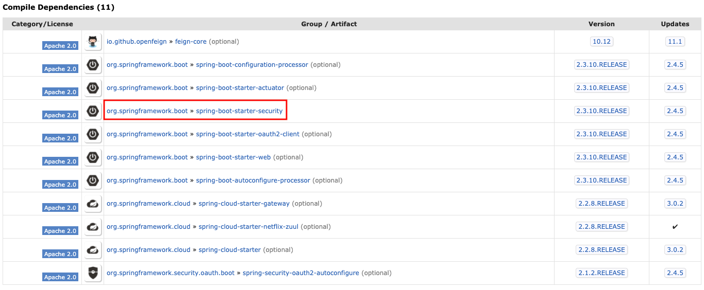

Authentication and Authorization: Spring Security + OAuth2
Generally speaking, application access security is developed around the two core concepts of Authentication and Authorization. You first need to determine the identity of the user, and determine whether the user has the authority to access the specified resource…
Generally speaking, application access security is developed around the two core concepts of Authentication and Authorization. You first need to determine the identity of the user, and determine whether the user has the authority to access the specified resource. There are many solutions for authentication, the mainstream ones are CAS, SAML2, OAUTH2, etc. The single sign-on (SSO) solution we often talk about refer to this. The mainstream authorization architectures are Spring Security and Shiro.
Compared with Spring Security, Shiro is said to be relatively lighter, but I have not felt much difference in usage for the time being. Recently, I mainly pick Spring Security when choosing framework, because it makes me feel good to collect a set of “Spring”. 一家人就要整整齐齐:)
What is OAuth2?
Before we go for Spring Security，let’s start with OAuth2. OAuth2 is an open standard for authorization. The core idea is to authenticate users through various authentication methods (what OAuth2 does not care about) and issue tokens so that third-party applications can use the token for a limited time, restricted access to specified resources. The main RFC specifications involved are RFC6749 (overall authorization framework), RFC6750 (token use), and 1RFC68191 (threat model). Generally, what we need to understand is RFC6749. There are four main ways to obtain a token, which are Authorization Code, Implicit Grant Type, Resource Owner Password Credentials Grant, Client Credentials Grant. More detailed -> 理解OAuth 2.0
The following figure is the handshake process of OAuth2 protocol (cite from RFC6749):

Resource Owner: The user who owns the resource being accessed.User-agent: It generally represents the browser.Client: Third-party applications.Authorization Server: used to authenticate users and issue tokens.Resource Server：the server that owns the resource being accessed, needs to use the token to determine whether it has permission to access.
Spring Security
Spring Security is a set of security frameworks that can control user access rights based on RBAC (role-based access control). The core idea is to intercept and filter through a series of filter chains.
[unfinished…]
Spring Cloud Security
The following figure shows the dependencies of Spring Cloud Security (2.2.5.RELEASE). It appears that Spring Cloud Security is a superset of Spring Security. In addition to having all the functions of Spring Security, it has more functions such as health check and load balancing.
